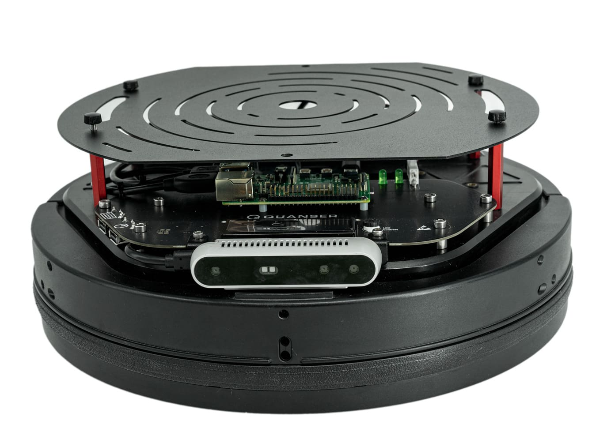
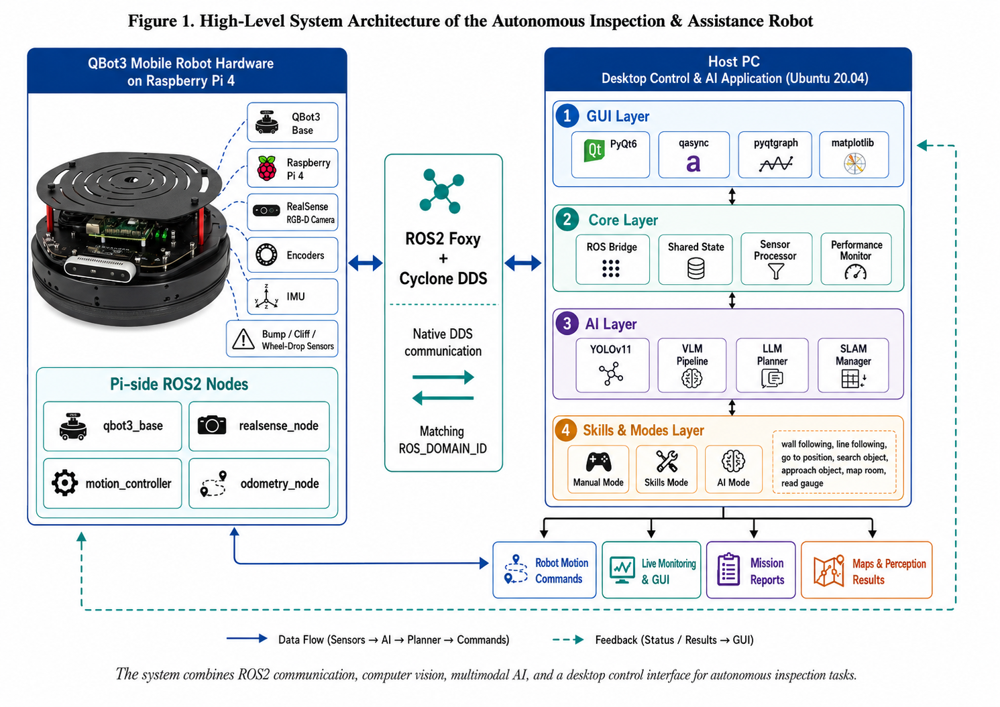
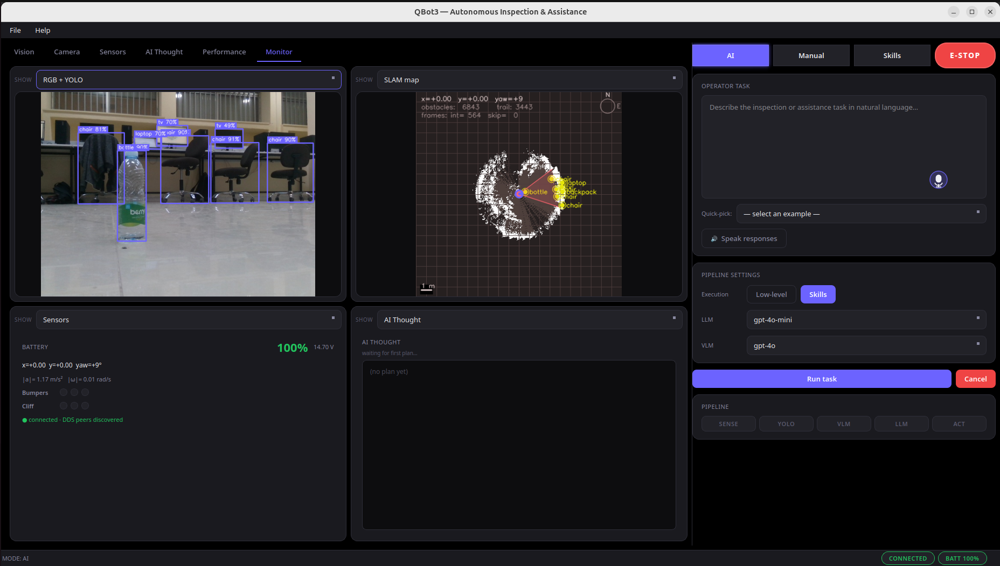
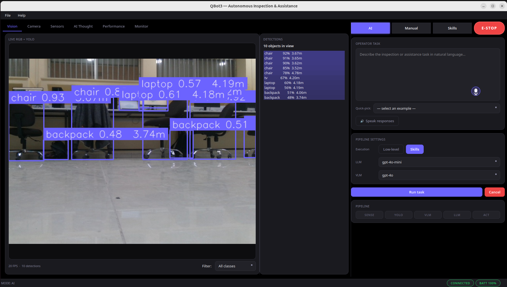
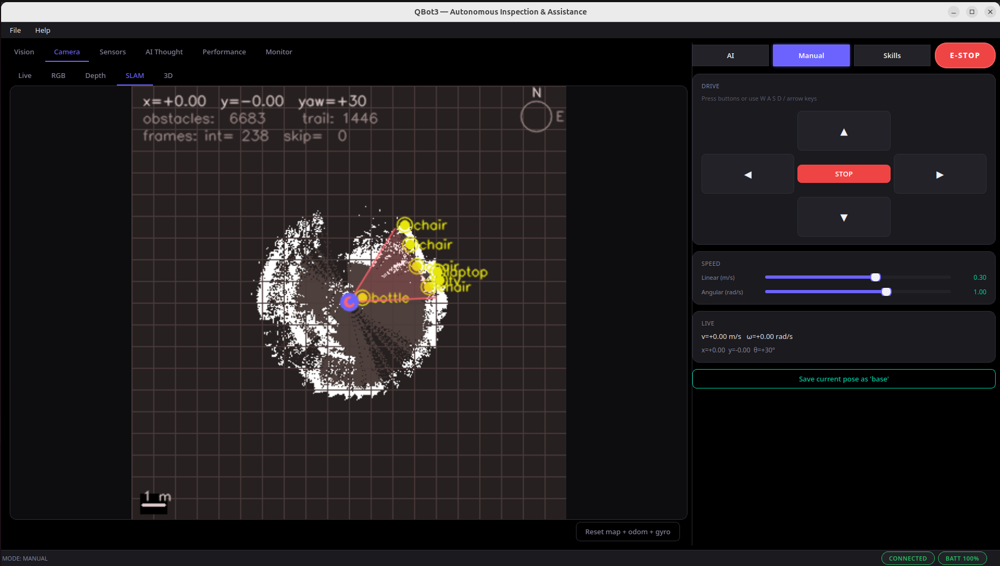
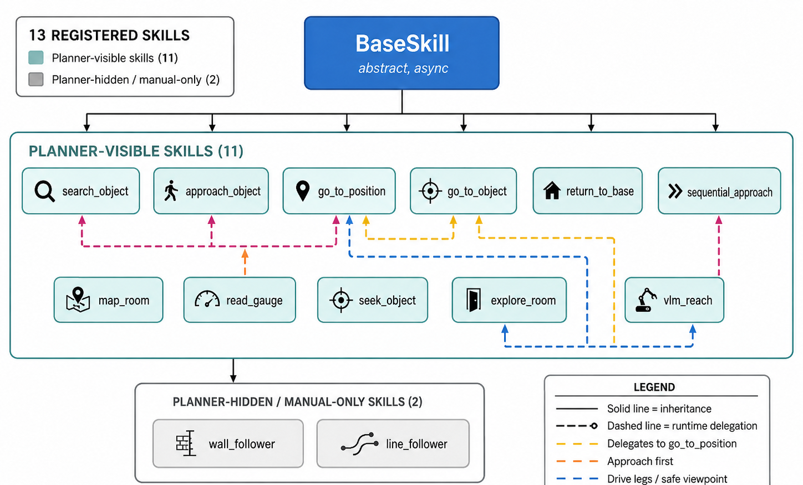

An AI-driven robotics platform combining Vision-Language-Action (VLA) models with ROS2 for intelligent, autonomous mobile robot operation.

Production-grade desktop control with a full AI perception-to-action pipeline.
YOLOv11 detection → VLM scene analysis → LLM planning → precise motor actions. VLM/LLM support for OpenAI GPT-4o and Google Gemini 1.5.
Wall following, object search/approach, room mapping, reading gauges, return-to-base, VLM reach, and more, all executing asynchronously.
PyQt6 interface featuring live RGB/depth/SLAM cameras, dynamic sensor plots, AI thought reasoning panel, and visual block programming.
Speech-to-text commanding and text-to-speech feedback using OpenAI Whisper and TTS-1, enabling natural conversation.
Persistent spatial memory. The robot remembers the 3D coordinates of objects it detects during SLAM exploration.
Auto-generated LaTeX PDF reports for every completed task, complete with trajectory maps and latency analytics.
A distributed system bridging a Raspberry Pi 4, a powerful Host PC, and Cloud APIs.

Ubuntu 20.04 + ROS2 Foxy. Handles hardware interfacing (QBot3 base, RealSense camera, encoders, IMU).
Python 3.11 + PyQt6. Runs the YOLO detector, SLAM grid, skill library, GUI, and communicates via Cyclone DDS.
Handles heavy inference tasks using GPT-4o, Gemini 1.5, and Whisper, with fallback to local-only mode.
A look into the QBot3's perception and control interface.



